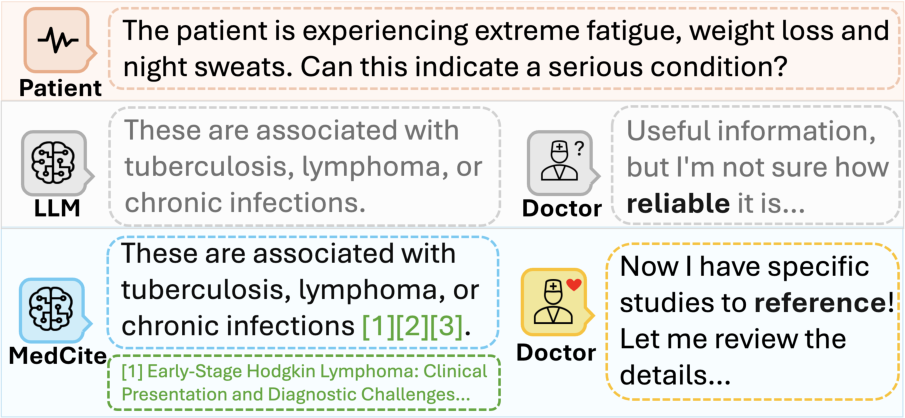
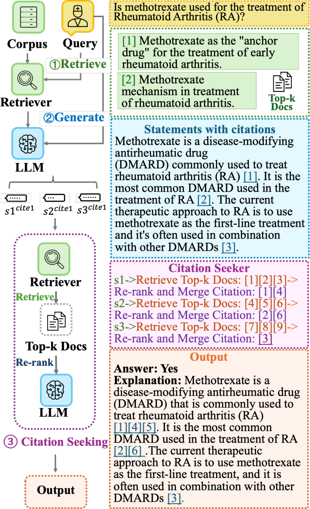

AI for Evidence Utilization · Verify
MedCite: Can Language Models Generate Verifiable Text for Medicine?
Xiao Wang, Mengjue Tan, Qiao Jin, Guangzhi Xiong, Yu Hu, Aidong Zhang, Zhiyong Lu, Minjia Zhang
ACL Findings 2025
These slides were generated with the help of AI and may contain errors.
01Motivation
AI medical citations: can we trust them?
- When a medical AI cites, one question decides trust: does the cited article really support the statement?
- Existing systems answer without citations, or attach references that may not back the claim.

02Workflow & results
MedCite retrieves citations and evaluates their support
Generate an answer
Question-level retrieval
Answer with initial citations
Seek citations
Retrieve evidence per statement
Rerank and merge citations
Evaluate support
Check cited evidence
Full, partial, or no support
JAVELIN Bladder 100 · Advanced urothelial cancer without progression after platinum chemotherapy.
Generated statement
Avelumab maintenance plus supportive care prolongs overall survival compared with supportive care alone. [4]
Cited evidence [4]Fully supported
Avelumab first-line maintenance + best supportive care prolonged overall survival compared with best supportive care alone.
Statement and evidence simplified from the paper, Tables 11 & 13. Cited source: PMID 35654659.
Answer accuracy (%)
82.9→83.3
Exact-match answer accuracy
Citation recall (%)
49.0→65.7
Statements fully supported
Citation precision (%)
42.8→47.7
Citations offering full or partial support
03Method
End-to-end citation generation and evaluation
- A citation seeker re-retrieves and reranks the sources behind each generated statement.
- An attribution judge then checks whether each cited article actually supports its claim.

04Result
RAG improves answer accuracy, but citation quality declines
| Method | Accuracy | MAUVE | ROUGE-L | Cite recall | Cite prec. |
|---|---|---|---|---|---|
| Non-RAG | 71.4 | 53.2 | 18.1 | 59.1 | 52.9 |
| RAG | 82.9 | 52.2 | 14.8 | 49.0 | 42.8 |
| RAG w. Oracle | 94.3 | 63.5 | 20.6 | 57.5 | 43.2 |
Compared with Non-RAG, RAG increases answer accuracy from 71.4 to 82.9, while citation recall and precision decrease. Underlined values are best in each column. Source: Table 2.
05Result
Re-retrieval with LLM reranking wins
| Citation-seeking strategy | Cite recall | Cite prec. |
|---|---|---|
| Pre-gen shortlist + LLM rerank | 54.7 | 41.4 |
| Retriever-only re-retrieval | 65.7 | 47.7 |
| Re-retrieval + NLI rerank | 65.4 | 55.1 |
| Re-retrieval + LLM rerank | 65.8 | 61.0 |
Citation quality by attribution strategy (answer accuracy 83.3 for all). Re-retrieval + LLM reranking gives the best precision. Source: Table 3.
06Result
The multi-pass method beats single-pass
| Configuration | Accuracy | MAUVE | ROUGE-L | Cite recall | Cite prec. |
|---|---|---|---|---|---|
| Non-parametric (single-pass) | 82.9 | 52.2 | 14.8 | 49.0 | 42.8 |
| Hybrid (multi-pass) | 83.3 | 59.2 | 16.8 | 65.7 | 47.7 |
The multi-pass hybrid design lifts citation recall and precision at comparable answer quality. Source: Table 4.
07Summary
MedCite at a glance
| Background | Medical AI answers increasingly arrive with supporting citations. |
| Problem | But can we trust them — do the citations actually support the claim? |
| Approach | End-to-end citation generation plus an automatic attribution judge. |
| Results | Re-retrieval with LLM reranking gives the best citation precision; the judge matches expert annotators. |
| Conclusion | A benchmark + metric for the “verify” step of trustworthy medical AI. |